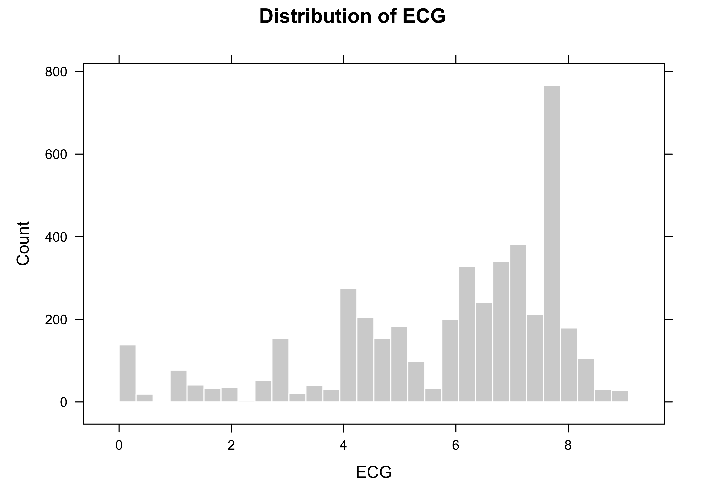
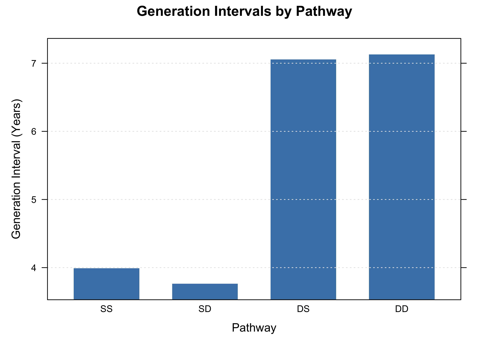
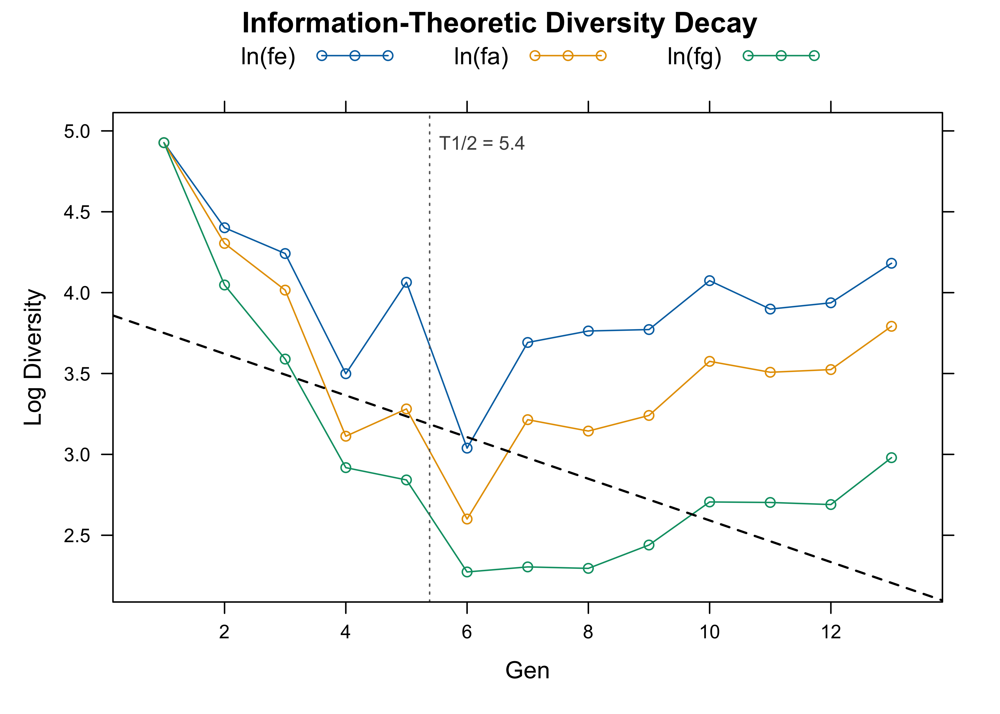
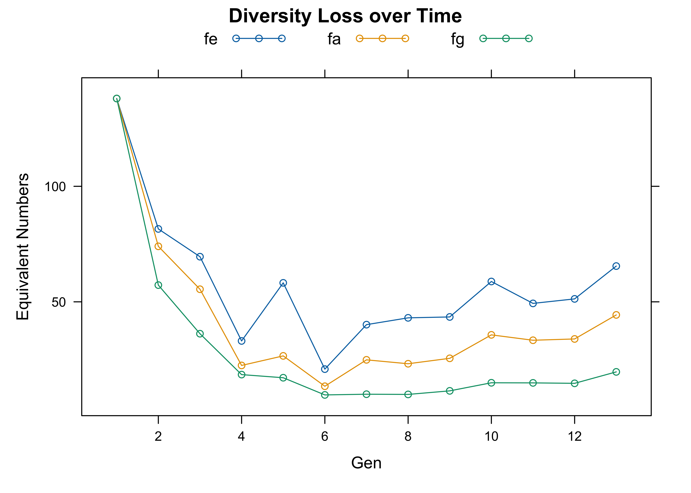

From pedigree records to genetic diversity analysis in R with visPedigree
A pedigree-based genetic diversity workflow in R: pedigree completeness, generation intervals, founder contributions, effective population size, and diversity half-life with visPedigree.
R
Genetics
Pedigree
Breeding
Conservation
r-bloggers
Author
Sheng Luan
Published
August 6, 2026
A pedigree is a family tree at population scale. Every breeding program, studbook, and conservation herd keeps one — usually as a spreadsheet with three columns: Ind, Sire, Dam, repeated row after row. Those columns tell you who is related to whom, but they say nothing about the questions that actually matter:
How complete and deep is my pedigree? — Can I trust diversity estimates computed from it?
How long is a generation? — What is the rate of genetic turnover?
Who carries the gene pool? — Are a few founders or ancestors dominating the population?
How much diversity remains? — What share of the founder genome is still present?
How fast is it disappearing? — When will the founder genome halve?
How large is the effective population size? — Is the population smaller than it appears?
In my previous tutorial, I showed how visPedigree turns raw pedigree tables into publication-ready graphs. This article covers the analysis side: how the same package computes the indicators used in breeding and conservation genetics — pedigree completeness, generation intervals, founder and ancestor contributions, effective population size, and a headline metric called the diversity half-life.
Getting started
Install visPedigree from CRAN and load it:
install.packages("visPedigree")install.packages("optiSel") # only needed for the ExamplePed dataset used belowlibrary(visPedigree)
One tidy step, every analysis after
Every analysis in this article starts from the same object: a pedigree prepared by tidyped(). The function validates the parent–offspring records, orders individuals, infers generations, and flags pedigree loops.
We will use two datasets:
deep_ped (built in) — 4,396 individuals across deep generations, ideal for completeness, diversity, and half-life analysis.
ExamplePed from the optiSel package — the pedigree of a Hinterwald cattle population: 1,179 animals born between 1947 and 1995, ideal for generation-interval analysis because generations overlap.
Pedigree Summary
================
Total Individuals: 4399
- Males: 1839 (41.8%)
- Females: 2039 (46.4%)
- Unknown: 521 (11.8%)
Pedigree Structure:
- Founders (no parents): 138
- Both parents known: 4242
- Dam only known: 19
Generation:
- Maximum: 13
- Distribution: 13 generations (use str() for details)
Reproduction:
- Individuals with offspring: 1037
- Sires: 483 (Mean=8.8, Max=63 offspring)
- Dams: 554 (Mean=7.7, Max=34 offspring)
Full-sibling Families:
- Number of families: 540
- Mean family size: 7.86
- Maximum family size: 34
- Top families by size:
K010263AxK010702YZ: 34
K010278ExK010139A: 33
K010767AxK010130YZ: 33
K010148KxK010566YZ: 32
K010538DxK010507YZ: 32
================
Everything downstream — statistics, contributions, diversity, effective size — consumes this same tidied object.
Question 1: How complete and deep is your pedigree?
Every diversity indicator inherits the quality of the pedigree it is computed from. A shallow or incomplete pedigree can bias estimates of inbreeding and genetic diversity, because unknown ancestry reduces the information available for reconstructing relationships. pedstats() gives a compact structural summary in one call:
The $ecg component reports ancestral depth for every individual, summarized by three complementary metrics:
ECG — equivalent complete generations: a depth measure that accounts for both how far and how completely ancestry is known. It is an important pedigree-depth measure when interpreting inbreeding- and coancestry-based analyses.
FullGen — the number of fully traced ancestral generations.
MaxGen — the deepest known ancestral path, even if incomplete.
pedstats() also prints and plots these summaries — for example, the distribution of ECG across the population:
plot(stats_deep, type ="ecg", metric ="ECG")

Figure 1: Distribution of equivalent complete generations (ECG) in deep_ped. The distribution is skewed toward deep ancestry — the median is 6.4 ECGs, and most individuals carry more than six ECGs.
ECG is such a useful quantity that it has its own function, pedecg(), returning the per-individual table you can sort, filter, or export.
Question 2: How long is a generation?
The generation interval — the average age of parents when their offspring are born — determines how quickly genetic material cycles through the population. Longer generation intervals generally slow the rate at which genetic improvement accumulates per unit time.
We use the Hinterwald cattle pedigree bundled with optiSel — generations overlap there, which is exactly what makes generation intervals interesting:
Pathway N Mean SD
<char> <int> <num> <num>
1: Average 1564 5.429011 3.306798
2: DD 436 7.128390 3.355804
3: DO 758 7.097622 3.311750
4: DS 322 7.055960 3.255885
5: SD 466 3.763863 2.355588
6: SO 806 3.859772 2.414623
7: SS 340 3.991223 2.490764
The output reports generation intervals by parental pathway, including sire–son (SS), sire–daughter (SD), dam–son (DS), and dam–daughter (DD), plus an overall average. Here the contrast is striking: sires are about four years old on average at the birth of their calves, dams about seven. This difference reflects the distinct reproductive and selection strategies for males and females in cattle breeding, and directly affects the rate of genetic gain per year.
plot(stats_time, type ="genint")

Figure 2: Generation intervals by gametic pathway in the Hinterwald cattle pedigree (optiSel::ExamplePed). Sires are about 4 years old on average at the birth of their calves (SS, SD); dams about 7 years (DS, DD).
You can also call pedgenint() directly for the full pathway table, or pass cycle to compare the realized interval with a target breeding cycle (here, a 4-year cycle):
pedgenint(ped_cattle, timevar ="Born", unit ="year", cycle =4)
Question 3: Who carries the gene pool?
The most informative way to describe a population’s genetic architecture is to ask where its genes come from. pedcontrib() traces expected genetic contributions from founders and ancestors into a reference population — the cohort you care about (recent generations, breeding candidates, genotyped animals).
Here the reference population is the most recent two generations of deep_ped:
Effective number of founders, fe — how many founders the population behaves like, if their contributions were equal. A small fe relative to the actual founder count means founders were used very unequally.
Effective number of ancestors, fa — how many ancestors explain the gene pool after removing contributions already explained by more influential ones. When fa is markedly smaller than fe, a small set of key ancestors has contributed disproportionately to the gene pool, indicating a potential genetic bottleneck.
Figure 3: Top 10 ancestor contributions to the reference population of deep_ped. The ten most influential of the 94 ancestors account for about 38% of the gene pool.
Per-founder contributions are in contrib_res$founders. The Shannon-entropy variants feH and faH weight founder and ancestor contributions more evenly; a large ratio feH / fe indicates that genetic contributions from less influential founders are retained but underrepresented by classical metrics.
Question 4: How much diversity remains?
pediv() is the integrated diversity summary. From the reference population it computes founder genome equivalents (fg), mean coancestry, and the retained genetic diversity index GeneDiv:
NFounder fe fa fg MeanCoan GeneDiv
<int> <num> <num> <num> <num> <num>
1: 157 64.73344 44.12033 19.17965 0.0260693 0.9739307
The headline index is GeneDiv — the pedigree-based retained genetic diversity, equal to one minus the mean coancestry of the reference population. An unrelated, non-inbred population has GeneDiv = 1; under the standard pedigree coancestry definition, a population of full sibs from two unrelated founders has GeneDiv ≈ 0.75. Because it is a dimensionless proportion, it is the easiest metric to communicate to managers and stakeholders.
Founder genome equivalents (fg) is the more conservative indicator: it captures drift as well as unequal founder use and bottlenecks, so it is often the smallest of the three.
Question 5: How fast is diversity disappearing? — the diversity half-life
pediv() is a snapshot. pedhalflife() turns it into a film: for every time point in the pedigree (here, every generation), it recomputes fe, fa, and fg, then fits a log-linear decay model to quantify the rate of diversity loss.
The total loss rate is decomposed into three additive components, each with a distinct biological meaning:
Component
Symbol
Source of loss
Foundation
λe
Unequal founder contributions
Bottleneck
λb
Overuse of a few key ancestors
Drift
λd
Random genetic drift in a finite population
The diversity half-life is the number of time units for fg to halve: T₁/₂ = ln 2 / λtotal.
For deep_ped, the drift component (λd) dominates the total loss rate — most diversity loss here is random drift rather than fixable selection decisions. The half-life of about 5 generations means that, at the current rate, founder genome equivalents will halve after approximately five generations. A shorter diversity half-life indicates faster loss of founder genome representation and can serve as an indicator for diversity management.
The full object also exposes the per-generation time series, and can be plotted on the log scale (the fitted linear decays) or the raw scale:
plot(hl, type ="log")

Figure 4: Log-linear decay of effective founders (ln fe), effective ancestors (ln fa), and founder genome equivalents (ln fg) across generations in deep_ped. Slopes of these lines are λe, λb, and λd.
plot(hl, type ="raw")

Figure 5: The same diversity metrics on the original scale: fe, fa, and fg by generation.
To focus the half-life on a specific window — for example, the last four generations — pass them to the at argument:
The λ decomposition turns “we are losing diversity” — which everyone already knew — into “we are losing it for this reason”, which tells you what to do: broaden founder use for λe, balance the use of influential ancestors for λb, and enlarge the breeding population (or cryopreserve) for λd.
Question 6: How large is the effective population size?
pedne() computes pedigree-based estimates of effective population size from the same tidied object, using demographic parent counts, the realized rate of inbreeding, or the rate of coancestry:
# Coancestry-based Ne — the strictest and most sensitive warning signalne_coan <-pedne(tp_deep, method ="coancestry", by ="Gen", seed =42L)ne_coan
The coancestry-based estimate detects the accumulation of relatedness before it is fully expressed as inbreeding, making it the earliest warning signal in managed populations. Individual inbreeding coefficients can also be computed with inbreed() (or tidyped(..., inbreed = TRUE)) and displayed directly on the pedigree graph with visped(showf = TRUE), as shown in the visualization tutorial; pedfclass() classifies individuals by inbreeding severity.
Where to go from here
This article covered the pedigree-based diversity pipeline: completeness (pedstats(), pedecg()), generation intervals (pedgenint()), gene-origin analysis (pedcontrib()), diversity snapshots (pediv()), diversity dynamics (pedhalflife()), effective size (pedne()), and inbreeding monitoring (inbreed(), pedfclass()).
The same tidied pedigree object also powers relationship matrices and large-scale pedigree-based computations. That is the topic of a future article.
The same workflow can also be applied to large-scale breeding populations, including aquaculture species with complex family structures.
If visPedigree contributes to your published work, please cite it:
Luan S, Kong J, Xia Z, Kang Z, Qiang G, Luo K, Sui J. 2026. visPedigree: a comprehensive R package for tidying, analyzing, and visualizing breeding pedigrees. Bioinformatics Advances. DOI: 10.1093/bioadv/vbag210.
(citation("visPedigree") always returns the citation for your installed version.)